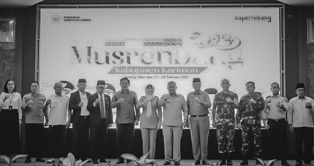

Apakah OPD Kabupaten Karimun Serius Dalam Memikirkan Daerah?
Beberapa minggu yang lalu di sektor pemerintahan mulai dari desa atau kelurahan dan kecamatan sudah melakukan sebuah amanat Peraturan Menteri Dalam Negeri Nomor 86 Tahun 2017 tentang Perencanaan Evaluasi Pembangunan Daerah. Hal ini yang kerap disapa oleh masyarakat umum dengan sebutan musyawarah perencanaan pembangunan atau Musrenbang. Musyawarah perencanaan pembangunan ini menurut kalangan masyarakat umum sangat penting untuk menjadi bahan pembahasan langsung bersama kepala daerah yang memimpin daerahnya.
Musrenbang Kabupaten Karimun
Setelah usai dilakukan musyawarah perencanaan pembangunan mulai dari desa atau kelurahan dan kecamatan, maka akan beranjak ke tahap selanjutnya yaitu kabupaten. Menanggapi hal ini, Kabupaten Karimun salah satu kabupaten yang ada di Provinsi Kepulauan Riau menggelar musyawarah perencanaan pembangunan pada tanggal 27 Februari hingga 28 Februari 2023, bertempat di Gedung Serbaguna Nilam Sari. Acara Musyawarah Perencanaan Pembangunan (MUSRENBANG) digelar selama 2 hari berturut-turut dengan tema "Pemerataan Pertumbuhan Ekonomi Berkeadilan Melalui Peningkatan Investasi, Pembangunan Infrastruktur, Sumber Daya Manusia, dan Tata Kelola Pemerintahan yang Inovatif."
Peserta dan Acara
Peserta musyawarah perencanaan pembangunan dihadiri oleh anggota dewan legislatif, organisasi pemerintahan daerah (OPD), camat se-Kabupaten Karimun, organisasi kemasyarakatan, dan organisasi kemahasiswaan.
Beberapa acara yang ada di dalam musyawarah perencanaan pembangunan mulai dari hari pertama yaitu pembukaan dan diskusi yang terbagi menjadi tiga kelompok:
- Kelompok 1: Bidang perencanaan pemerintah dan pembangunan manusia
- Kelompok 2: Bidang perencanaan sumber daya alam, infrastruktur, dan kewilayahan
- Kelompok 3: Bidang perencanaan perekonomian
Permasalahan dalam Musrenbang
Pada kegiatan musrenbang tersebut, diskusi bersama pemerintah daerah tidak efektif dan efisien karena waktu untuk diskusi hanya sekitar 4 jam untuk 1 tahun perencanaan ke depan. Bahkan tidak semua OPD dan dewan legislatif hadir. Dalam permasalahan ini, menimbulkan rasa kecewa masyarakat terhadap dewan legislatif Kabupaten Karimun dan organisasi pemerintahan daerah Kabupaten Karimun yang seharusnya menampung aspirasi masyarakat.
Selama pembahasan di hari pertama, forum sibuk dengan dirinya sendiri yang bermain gadget dan membuka media sosial selama berjalannya diskusi. Dalam diskusi di bidang perencanaan perekonomian, Kecamatan Sugie Besar tidak masuk dalam pembahasan. Selanjutnya pada hari kedua adalah penutupan musyawarah perencanaan pembangunan (MUSRENBANG).
Evaluasi dan Rekomendasi
Dengan permasalahan yang terjadi selama berjalannya Musrenbang Kabupaten Karimun, maka terdapat beberapa permasalahan yang dapat menjadi bahan pembicaraan bahkan pertimbangan oleh Kepala Badan Perencanaan Penelitian dan Pengembangan Kabupaten Karimun untuk menjadi bahan evaluasi ke depannya.